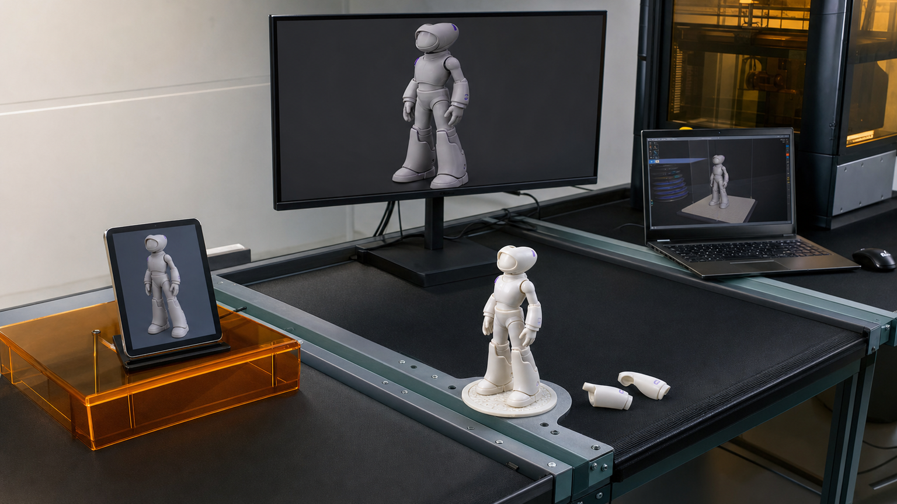
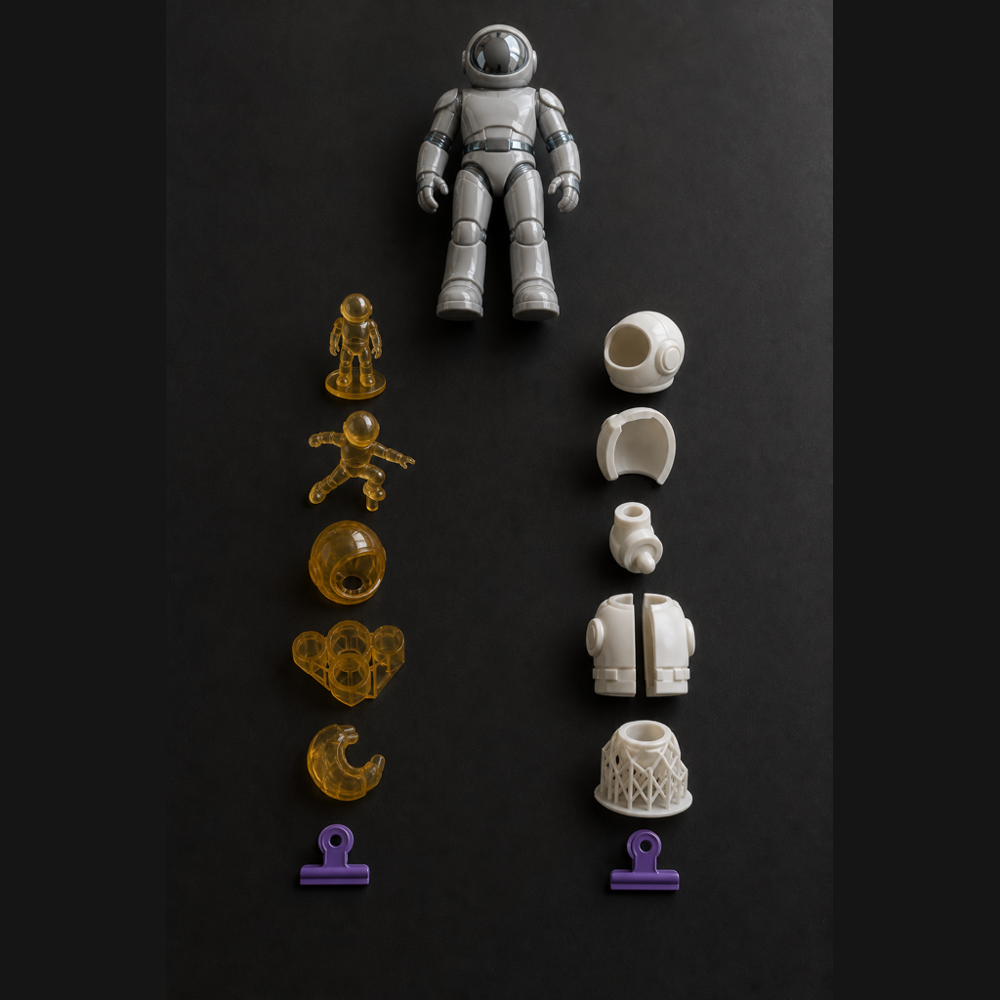
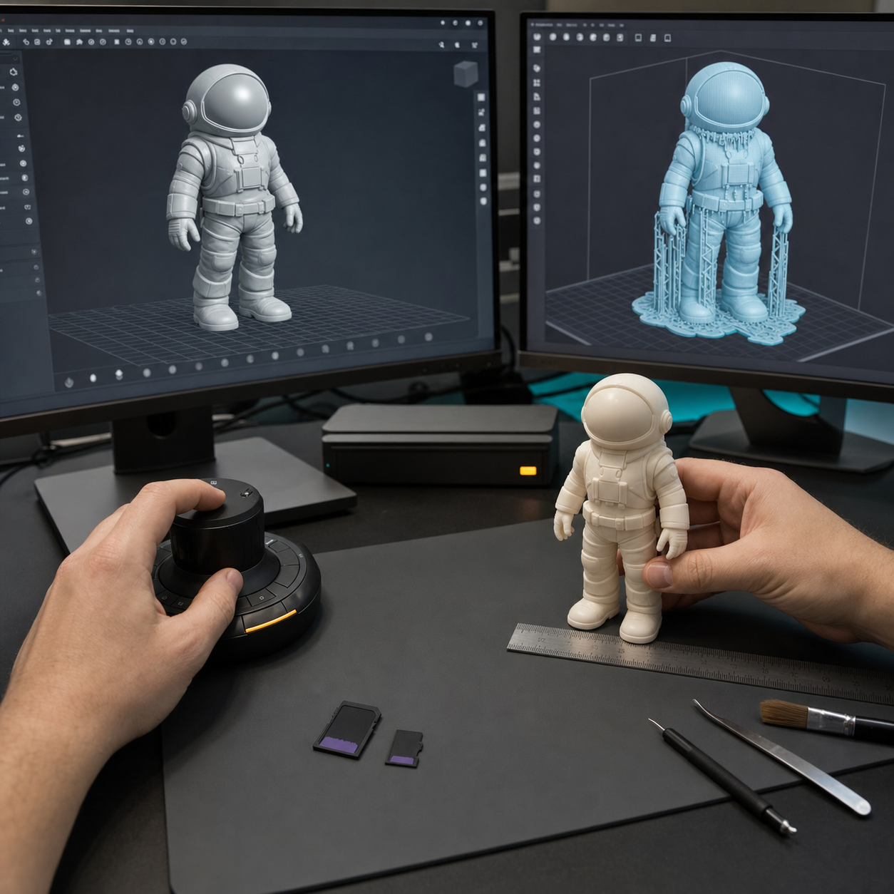
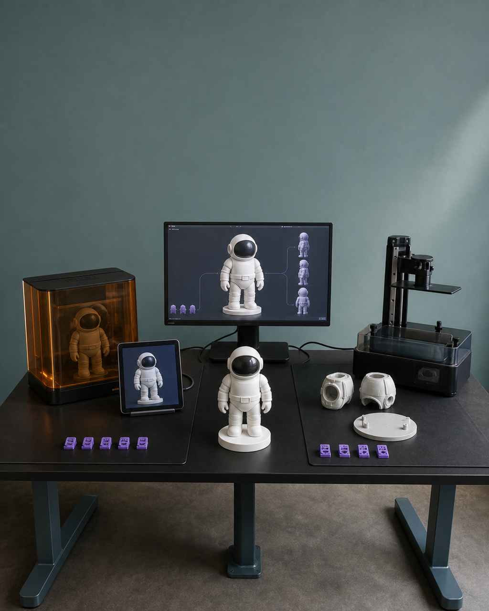

GLB 和 STL，不只是两个文件后缀
三维模型在屏幕上看起来完整，并不代表它可以用同一个文件同时承担网页展示和实体制造。GLB 需要保存适合在线查看的几何、材质或贴图，并控制加载体量；STL 面向切片和打印，核心是可制造的几何、真实尺寸、厚度、连接与拆件。两种任务的验收环境和失败方式不同。

具体问题
三维模型在屏幕上看起来完整，并不代表它可以用同一个文件同时承担网页展示和实体制造。GLB 需要保存适合在线查看的几何、材质或贴图，并控制加载体量；STL 面向切片和打印，核心是可制造的几何、真实尺寸、厚度、连接与拆件。两种任务的验收环境和失败方式不同。
如果只把它们理解成两个文件后缀，常见结果是文件夹里确实有两个文件，却没人能说明哪一个经过网页测试、哪一个通过可打印检查。后续一旦修正模型，还可能出现网页、切片、样件和说明资料各自引用不同版本的问题，导致修改无法追踪。
核心判断
GLB 是展示交付：要检查模型在目标网页或查看器中能否正常加载、旋转和缩放，比例、姿态、材质、贴图与坐标方向是否正确，文件体量是否适合实际页面。它服务于数字查看，不因画面好看就自动满足制造要求。
STL 是制造交付：要在真实毫米尺度下检查网格封闭、厚度、连接、重心、底座、拆件、定位与支撑空间，并进入切片环境验证。双文件的合格标准可以概括为用途明确、内容正确、结构可用、验证留痕、版本对应。
步骤或标准
按下面的检查项分别验收双文件。每项都应留下文件路径、版本号和验证结果，不能只用“最终版”命名。
- 先写用途：在项目卡和文件夹中明确 GLB 用于网页或数字展示，STL 用于切片、打印与装配。
- 检查 GLB：在目标网页或查看器打开，检查比例、姿态、材质或贴图、坐标方向、加载体量与交互是否正常。
- 检查 STL：按真实毫米尺寸检查封闭性、厚度、连接面积、重心、底座、拆件、定位关系和支撑空间。
- 分别验证：保存 GLB 的网页测试记录和 STL 的切片检查记录，不用渲染截图代替真实环境测试。
- 统一版本：项目卡、源模型、GLB、STL、预览图和修正记录使用同一编号；结构修改后标明需要重导的文件。
常见错误
以下错误会让“双文件已经导出”变成不可验证的表面交付。
- 把 GLB 与 STL 当作同一模型的两个导出副本；后果是展示端可能过重，制造端又保留破面、薄片或不合理拆件。
- 只确认文件能打开，不在目标网页和切片软件中测试；后果是材质丢失、加载过慢、尺寸错误或支撑问题直到下一阶段才暴露。
- 文件名没有统一版本号；后果是网页、打印样件和产品说明引用不同模型，无法判断哪次修正已经生效。
- 用轻量化展示文件覆盖制造源文件；后果是结构、细节或拆件信息丢失，后续修模和重打需要返工。
与五天课程的关系
这一主题主要对应 Day 2。完成 AI 三维初模与 Nomad 人工修模后，项目分别导出网页展示用 GLB 和打印用 STL，并在 Gate 2 核对 STL 的封闭、厚度、连接、重心、拆件与可支撑性；只有通过 Gate 2，制造文件才进入下一阶段。
下一阶段中，STL 在 Day 3 进入切片、打印与灰模验证；GLB 在 Day 5 进入个人独立站与在线 3D 展示测试。如果灰模暴露结构问题，应回到受控源模型修正，再按版本关系更新 STL；涉及外形或材质的改动也要判断是否同步更新 GLB。
事实 / 案例 / 完成度边界
本文与当天计划的四张图片都用于解释双文件工作流，属于课程流程示意，不是学员案例、真实委托项目或已经发生的课堂成果。真实案例只有在来源、授权、文件版本和完成状态可核验时才能单独标注；示意图不能替代真实案例。
五天内的目标是按项目实际情况形成可继续迭代的 GLB、STL 与验证记录，具体精度受起点、结构复杂度、尺寸、设备、材料、打印排程和修正次数影响。课程不承诺人人完成商业级精修、一次打印成功、正式包装印刷、批量生产、正式展览、授权成交或销售。
报名入口
如果你已有 IP / 角色资产，可以提交现有原画、角色设定或三维文件，并说明希望用于网页展示、实体制作或两者兼有；课程会在 Day 1 锁定范围，并在 Day 2 建立双文件交付关系。
如果你只有想法、草图或初步设定，也可以如实说明故事、参考方向、希望做成的物品和现有设备，不需要先自行准备成熟三维模型。公开报名地址：https://wj.qq.com/s2/27296919/9499/ 。提交资料不等于席位、付款或项目方案已经最终确认。



课程时间：2026 年 10 月 2 日至 10 月 6 日｜青岛｜每班限 10 人
填写报名资料 →